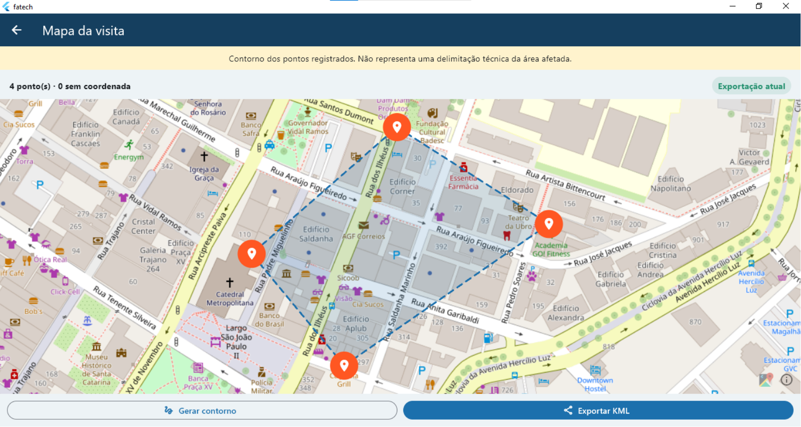

GPS e localização
Coordenadas, precisão e horário para contextualizar cada ocorrência.
A FATech organiza os registros de fiscalização ambiental: localização, fotos, relatos e áudios ficam ligados à mesma ocorrência e chegam ao QGIS prontos para análise.

Numa vistoria, o fiscal reúne coordenadas, fotografias, relatos e áudios. Quando esse material fica espalhado entre anotações e arquivos soltos, a informação perde valor na hora de revisar e analisar.
A FATech faz a ponte: registrar no campo, revisar com segurança e ver o resultado no mapa.
O aplicativo reúne as etapas da vistoria e reduz a distância entre o que é coletado no campo e o que será analisado depois.
4 ocorrências registradas
Recursos que acompanham o registro da coleta até a visualização.
Coordenadas, precisão e horário para contextualizar cada ocorrência.
Fotos, relatos escritos e áudios associados ao registro correto.
Os registros ficam no dispositivo mesmo sem conexão.
O material é conferido antes de a ocorrência ser finalizada.
Veja os pontos, abra cada registro e gere o contorno da área.
Arquivo KML 2.2 com os atributos das ocorrências, para o QGIS.
Quando configurada, ajuda na transcrição e em sugestões durante a revisão.
Dados fictícios apresentam o fluxo sem se misturar com dados reais.
Crie a visita e registre as ocorrências no local.
Adicione localização, fotos, relato e áudio.
Confira os dados e finalize o registro.
Visualize os pontos e leve os dados para o QGIS.
Visitas, ocorrências, registros, localização e mapa. Toque em uma imagem para ampliar.
O app é feito em Flutter/Dart. Os dados ficam em SQLite e arquivos privados; o backend em Python com FastAPI cuida do que depende do servidor.
A FATech mostra como tecnologia móvel, geolocalização, armazenamento local, IA assistiva e GIS podem trabalhar juntos numa vistoria ambiental.
O objetivo não é substituir a análise técnica, e sim organizar a informação para que o profissional possa revisar, interpretar e usar os dados coletados.
Registros de campo transformados em informação espacial utilizável.
Entre em contato para conhecer melhor o projeto, tirar dúvidas ou conversar sobre possíveis aplicações da solução.
fatech.projeto@gmail.com
FATech — Fiscalização Ambiental com Tecnologia